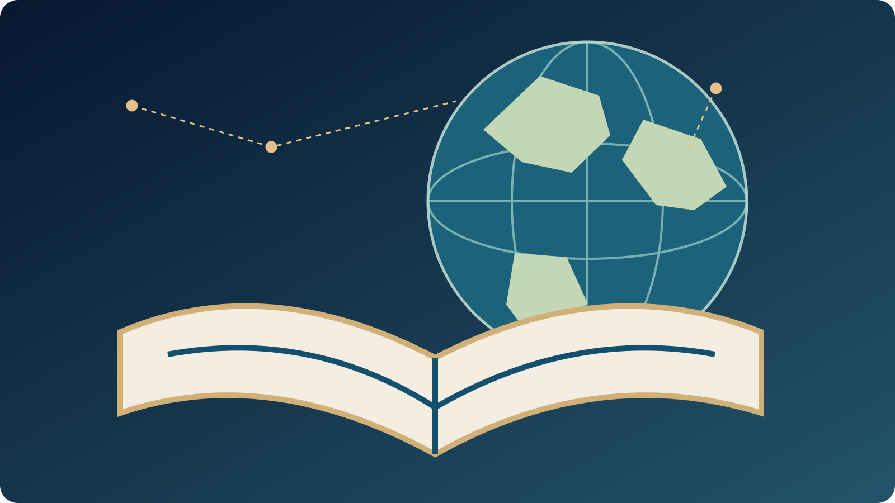
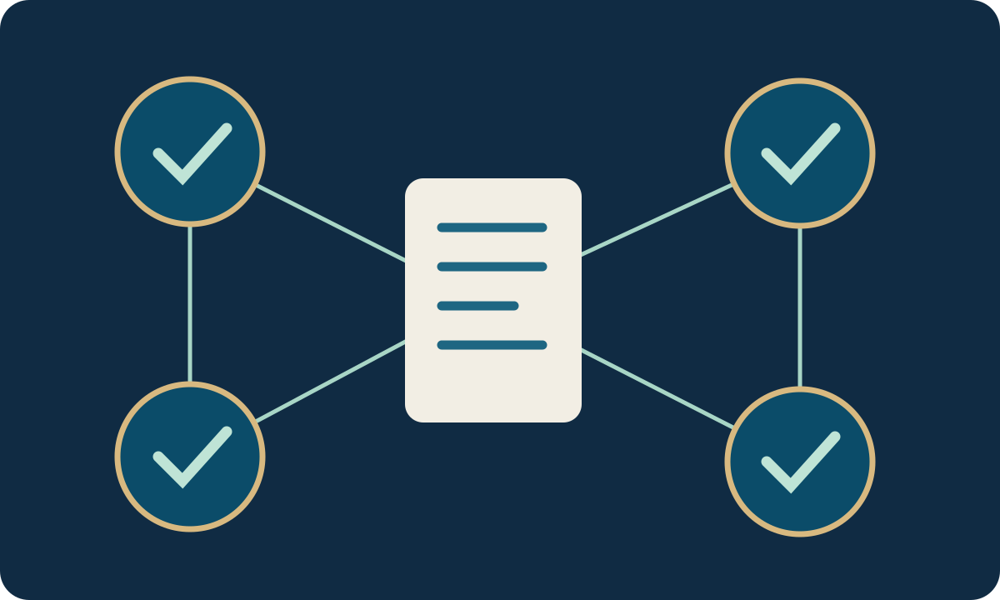
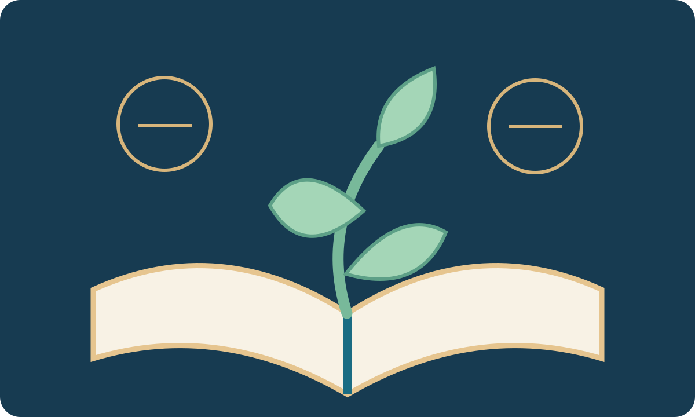

Founding Journal · 2026
Journal of Human-Centred Education, Learning and Assessment
A scholarly forum for research that examines education, learning and assessment as technically rigorous, context-sensitive and fundamentally human practices.
Editorial direction
Journal of Human-Centred Education, Learning and Assessment is being established as an interdisciplinary venue for work that crosses the boundaries between educational research, learning, assessment, language education, curriculum and materials, talent development, teacher education, educational technology and the ethical use of evidence in educational decision-making. The journal is intended to welcome methodological diversity while maintaining a clear expectation of theoretical seriousness, evidential transparency and relevance beyond narrowly local description.
The journal will not treat “human-centred” as a decorative label. Rather, the term marks an editorial commitment to examining how educational systems, technologies, tests, materials and institutions affect learners, teachers, families and communities, while retaining the methodological standards necessary for international scholarship.
Founding Editor-in-Chief
Dr. Javad Rezazadeh Yazdeli
Education researcher, university lecturer and educational consultant.
Launch status
The journal infrastructure, policies and founding issue are now in preparation. Submissions are not yet formally open.
Publication model
Digital-first, international, English-language scholarly publication with transparent article metadata and permanent article architecture planned from the outset.
Editorial principle
Rigour without reduction: evidence, context and human consequence are treated as complementary rather than competing concerns.
Journal pathways
For authors
Read the scope, author guidance, ethics and submission status before preparing a manuscript for JHELA.
For reviewers
Reviewers are selected by subject and methodological fit, with explicit consent and conflict checks.
For readers
The current issue and archive remain intentionally empty until genuine published material completes the editorial process.
Founding calls
Qualified scholars may now express interest in joining the founding reviewer network or contributing to the journal’s editorial development. All appointments remain subject to scholarly review and explicit acceptance.
International scholarly exchange · Founding stage
Research that takes educational evidence and human experience seriously
Educational practices cannot be understood adequately through measurement alone, just as the significance of learners' experiences cannot be established without appropriate evidence. JHELA is developing a scholarly space in which methodological rigour, teacher judgement, assessment validity, curriculum, language education and the consequences of educational decisions can be examined together.
Our proposed publishing model is digital-first and English-language, with independent editorial assessment, transparent scholarly provenance and permanent article records to be established before formal manuscript submissions open.

Public scholarly dashboard
Explore JHELA by your academic role
Open the full interactive scholarly dashboard for reviewers, editors, authors and readers →
The public dashboard below provides direct access to the journal's emerging scholarly policies and international calls. It is not an author account, a manuscript submission system, or an indication that an editorial appointment has already been granted.
01 / Review
Peer reviewers
Contribute research-design, discipline-specific and methodological expertise while supporting transparent and constructive evaluation.
International call for reviewers →Selection and reviewer-profile guidance →02 / Collaborate
Editorial collaborators
Help shape an independent, accountable editorial community. All invitations and appointments are assessed individually and require explicit consent.
Founding editorial collaboration →Editorial leadership and safeguards →03 / Research
Prospective authors
Understand the journal's scope, evidential expectations and publication ethics before preparing work for a future call for papers.
Scope and research themes →Author requirements →04 / Discover
Readers and institutions
Follow the founding process without misleading article counts, editorial affiliations or invented indexing history.
First issue status →Ethical publishing commitments →Aims and intellectual contribution
Connecting educational theory, evidence and situated practice
JHELA's prospective thematic areas include educational measurement and assessment, language education and materials, teacher development, learning opportunities, equity, human-centred AI in education and the interpretation of quantitative, qualitative and mixed-methods evidence. These areas are not intended to form a miscellaneous catalogue. Their unifying concern is how educational practices can be justified empirically while remaining attentive to the circumstances and people affected.
International relevance does not require the elimination of cultural and institutional differences. Rather, authors should explain which interpretations may transfer to other settings and which conclusions depend on the conditions under which the research was undertaken. By bringing contextual reasoning into dialogue with methodological scrutiny, the journal aims to promote research that is both internationally intelligible and locally responsible.


A transparent research-publishing future
A ten-stage roadmap towards international scholarly influence
JHELA makes explicit the difference between secure manuscript handling, genuine peer-reviewed publication, registered identifiers, external indexing and eventual impact-based quartiles. Our founding commitment is to produce credible scholarly work rather than to claim a ranking that has not been independently awarded.